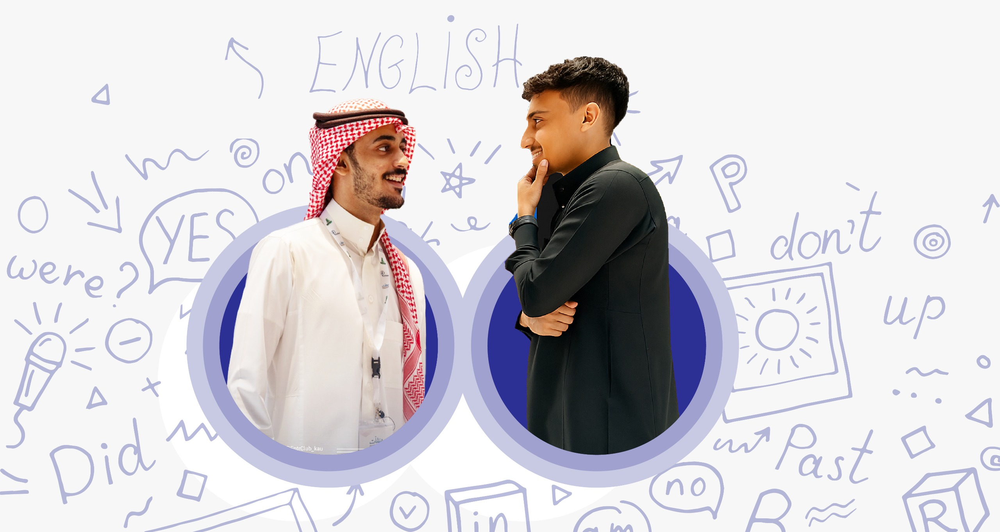

شريك رسمي لمركز IDP
شريك رسمي لمركز IDP
لغتك الإنجليزية تُقاس بدرجة —
ونحن نوصلك لها.
حصص مباشرة فردية 1:1 مع مدرّس ثنائي اللغة يبقى معك طوال المستوى، على مسار واضح وفق إطار CEFR: تحدّد مستواك، تختار برنامجك، تجدول حصصك على وقتك، وتنهي المستوى بشهادة معتمدة من كامبريدج.
لنبدأ الآن ←
أكثر من 50 معلمًا مؤهلًا بدوام كامل، وثقة أكثر من 200 طالب بنتائج مثبتة.

تقرير مستواك
CEFR / IELTSالمحادثة 1:1 مباشر7.5
الاستماع7.0
الكتابة6.5
القراءة7.0
الدرجة الإجمالية7.0
● يُحدَّث بعد كل حصة مباشرة